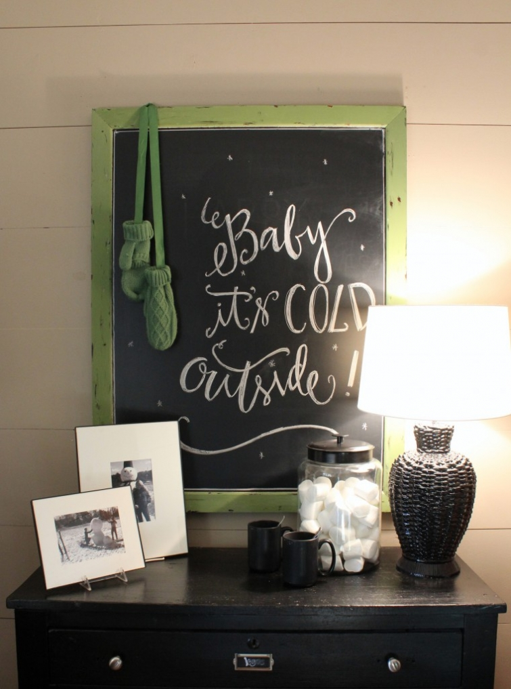

.png)
.PNG)
.PNG)
.PNG)
.PNG)
.PNG)
.JPG)
.JPG)
.PNG)
.PNG)


 I hope your weekend was a good one. Â We just worked on cleaning up around here, and now that my husband thinks he is over pneumonia he started back trying to finish the floors upstairs. I always like Sunday evenings as the weekend winds down, and Sunday suppers are a nice time to have comfort food. Plus, it has been quite cold around here, and comfort foods are called for when you need something to warm you. (And suppers are not nearly as time constrained as Sunday lunches are.)
I hope your weekend was a good one. Â We just worked on cleaning up around here, and now that my husband thinks he is over pneumonia he started back trying to finish the floors upstairs. I always like Sunday evenings as the weekend winds down, and Sunday suppers are a nice time to have comfort food. Plus, it has been quite cold around here, and comfort foods are called for when you need something to warm you. (And suppers are not nearly as time constrained as Sunday lunches are.)
This meal was perfect for a cold winter night…(or at least cold for Georgia. 🙂 )
You have probably made some version of the main dish, but if you haven’t, I hope you will try this one. Â My mother makes a similar dish, but she uses dried beef in place of the ham. Here is my version:
1. Â Preheat the oven to 375 degrees and spray a 9×13 in. casserole dish with vegetable oil.
2. Â You will need 4 skinless boneless chicken breasts. Â Slice them in half lengthwise.
3. Â Use a meat mallet to flatten each half. Â I put each piece in a zip lock bag and flatten them while they are inside it. Â When you finish, lay each of the flattened pieces out on parchment paper or a large tray and sprinkle a little salt on them.
4. Place 3 slices of deli ham on each of the chicken pieces.  I tried a different ham this time…Black Forest, but  I did not like it…tasted somewhat like pastrami to me.  (Although my husband and son thought it tasted fine.) Next time I will go back to using honey ham.  Roll up the chicken into bundles and place in the casserole dish.
My mother’s version (and many others) call for wrapping the bundles with slices of bacon before putting them in the dish. Â I do it differently because I do not like the way the bacon turns out when cooked this way. If you decide to wrap the bundles with bacon, you will not need to salt the chicken.
5. Â In a medium size bowl, mix one family size can of Cream of Mushroom soup with 16 oz. sour cream. (This is more than the traditional recipe calls for, but it makes such a delicious gravy that we eat a lot of it. A lot.) Â Then spread it over the chicken.
6. Â Cover with foil and bake for one hour at 375 degrees. Â Then remove the foil, and bake an additional 30 minutes.
While the chicken was baking, I made chocolate pudding…just the regular Jello variety that you cook (not instant.) Â I put it in jars covered with plastic wrap in the refrigerator. Â The green beans were cooked… (with half an onion, a slice of bacon, and some salt and pepper.)
And a green salad was tossed together with grape tomatoes, onion slices, and beets. Â When the aluminum foil was removed for the last 30 minutes of baking the chicken, I made the whipped cream for the pudding. Do you put your mixing bowl and beaters in the freezer a few minutes before beating the whipped cream to make sure they are chilled? I wonder if this really makes any difference… Â Okay back to the chicken.
7. Fry 8 slices of bacon in a pan on the stove. Â (This is what I do with the bacon that is different from the old recipe.) Â When the bacon is finished, drain the slices on paper towels and crumble them into large pieces. Empty a small jar of mushrooms (do not drain them) into the bacon grease, and heat them in it. Â This way you can add mushrooms to the plates of those who like them when the dish is served. (We have picky eaters around here!)
After cooking the rice and heating the rolls, Â the chicken was ready. Â To serve it, we placed gravy on a serving of rice and a chicken breast on top of that, spooned a couple of tablespoons of the mushrooms on top of the chicken, and finished it with some of the crumbled bacon. (Sorry for the poor photography. Â I do not like taking photos at night because the lighting is terrible.)
Warm chocolate pudding with whipped cream was the dessert on a cold Sunday night.
And that was our Sunday supper.
You would think if we are going to keep having all this cold we could at least get a little bit of snow…just a few flakes, perhaps?
Crossing my fingers that February will have some of the white stuff.
So what did you do this weekend?
I’d love to hear all about it! 🙂


.PNG)
I love all of the chalkboards you have displayed in your beautiful home. How many different chalkboards do you have and where do you buy them? I love the green color of the frames pictured in this post. Did you paint them yourself? If so, what’s the name and brand you used. I just adore your site!
—————————————————————
Thank you, Ashley! How many? Um..let’s see…There is one large one from Pottery Barn in the playroom, and one small one in there from Hobby Lobby. There is a small one over the desk in the kitchen, also from Pottery Barn, and there is the long one on the porch from Pottery Barn. I did paint the frames of the ones in the playroom, and the color is Moss – a Laura Ashley paint from Lowes. Then I added some black brush strokes to give it a more shabby chic look.
I am glad you are enjoying the blog! Please visit again. 🙂
Kelly
Kelly, that looks delicious! However, my hubby and son would never eat it because of the mushroom soup. Could I use something else you think? 😉
————————————————————
There appears to be a good substitute for it at this site, and it does not have the mushrooms…so I am not sure how the flavor of that “gravy” would be. It would be worth a try though: http://southernfood.about.com/od/ingredientsubstitutions/r/bl90911a4.htm I think if I were going to do it this way, I would dice all the ham and put it as a layer on the bottom of the casserole instead of rolling it up in the chicken. That way it would give the sauce more flavor. You would simply need to be sure you ladle out some of the ham with the sauce on top of the chicken when you serve it…might actually taste better that way! 🙂
Kelly
Mmm…I have a similar chicken recipe, minus the bacon and + stuffing. It’s very much winter comfort food. We are in a deep freeze in the midwest and it sounds wonderful! (and I always love looking at your jar fillers-you are so creative!)
———————————————————–
The entire country except for California seems to be in a deep freeze (even here!) We all need some warm comfort food tonight, and it looks like we may need it for at least another week the way the jet stream seems to be traveling. I am glad you like all the filled jars (and that you notice them. 🙂 )
Kelly
The meal sounds wonderful. I have one question: you mentioned warm chocolate pudding but said you refrigerated it after you made it. Did you reheat somehow?
My weekend was quiet; I’ve been sick with an “upper respiratory infection” so spent the whole day Sunday sitting in my comfy chair reading and watching football.
————————————————————-
I am so sorry you have been sick, Sue. No fun, but at least you got in some reading and rest. To answer your question about the pudding, I did put it in the refrigerator, but not for very long. It was boiling when I poured it into the jars, and I knew if I put whipped cream on it while it was that hot, the whipped cream would just melt…not good. I like it fluffy! So the pudding was refrigerated enough to cool it down a little (and thicken some) but not be “cold.” I think, though, it could probably be microwaved to warm it if you happen to have a while before serving it….but I have never tried that…just seems to me that would work. Wish I had some leftover right now to try an experiment of that!
Kelly
Yum! Your dinner looks delicious! I am going to try that chicken dish. (My mom always had to make the chocolate pudding that has to be cooked. My dad says he can tell the difference. Not me, I use the instant kind.) I had a fabulous weekend. Hubba and I took a roadtrip…first to Asheville for dinner at a favorite restaurant, then on to High Point to spend the night with my parents. (My 81 year old dad and I got up early to cut letters from books for my repurposing business.) Saturday we headed to Fredericksburg, Virginia but stopped along the way to see my cousin’s fabulous shop, Very Richmond Gallery and Gifts at the Omni Hotel in downtown Richmond. (I hadn’t seen her shop and I was so, so impressed. I wanted one of everything there!) We journeyed on to my Fredericksburg where we stayed with my husband’s sister’s family. They just finished redoing a 1939 house and what a treat that was to see! It is a dream house and I actually thought what a post you could do on that. (I loved this story..the hardware they found to match their existing doors was hardware that Tom Hanks also just bought for an upcoming 9-11 movie set in NYC. I will have to see the movie just to see the door hardware.) Finally, we visited antique stores in downtown Fredericksburg where I bought a few items for my daughter’s wedding. Fun weekend!
—————————————————————-
My husband says that he can tell a difference in the cooked versus the instant, too. I can tell by the temperature. 🙂 You went to some fabulous places this weekend Kathy!! And how amazing about the hardware in your sister-in-law’s house! Shopping for a wedding would have to be fun. Yes, I would say that you had a great weekend! (Sure beats cleaning the house and running errands.)
Stay warm…I know it must be very cold in NC.
Kelly
Your Sunday dinner looks delicious, especially the pudding with fresh whipped cream. I put my bowl in the freezer but have never put my beaters in and have not had a problem. I will try that next time though. My kids won’t eat mushrooms either…that’s ok, more for me! We have had nothing but snow since December. I’m not complaining, I love it. I’d rather it be cold with snow than cold without. Hope you get some! Have a great week.
Kristi
————————————————————-
Amen to “I’d rather it be cold with snow than cold without.” 🙂 And you have a great philosophy about the mushrooms. Too funny!
Stay warm!
Kelly
This looks great!I used to make a version of this in the crock pot but your recipe looks better! I am going to make this after my next grocery trip. The only thing my family is not fond of is beets! Still loving your use of blue!
My brother had business close by so he stopped in and spent the weekend with us. It was his 50th birthday. I surprised him with a guided fishing float trip from Brookings Anglers in Cashiers. His excitement before and after the trip was the best part of the weekend! I’d like to say I cooked his favorite meal but we went out to eat instead. He brought a HUGE chunk of homemade chocolate peanut butter cheesecake from the party his family gave him the previous weekend. After I ate it ALL he told me I was supposed to split it with my husband..oops…
—————————————————————
I am thinking of trying this in the crockpot too. Thanks for the idea, Katrina! The blue is still here for a few more days…meant to change it out this past 3 day weekend but tackled a new project instead. What a great birthday gift you did for your brother!! Chocolate pb cheesecake would HAVE to be very rich. How in the world did you eat a HUGE piece???? (I bet it was yummy.)
Kelly
Kelly,
This kind of meal is exactly what we enjoy on winter, Sunday evenings…even when it’s been 80 degrees during the winter’s day.
I’ve copied this recipe, it looks delicious.
Cooked chocolate pudding, even from a box, is our favorite easy dessert. There is something so delicious about the warm pudding with whipped cream. Yummy. Thanks.
Karen
———————————————————–
Now you are making me hungry! (It is dinner time here and there are no pudding leftovers.) Chocolate pudding must be the ultimate comfort food! The chicken dish will be good even if you are having springlike weather. 🙂
Kelly
Kelly,
I am going to have to try this chicken recipe for sure! It is exactly what my crew loves. It is so warm here now that we are going to grill tonight. I even have the back door open to let in some fresh air! Love the warmth right now…cold is in the near future forecast.
This past weekend we had lots going on. A birthday party and a baby shower to attend. House cleaning etc. It is so nice to have an extra long weekend to get caught up on things.
————————————————————–
Doesn’t that extra day make such a difference?! Sounds like your weekend involved parties and gifts. 🙂 I hope you will get an opportunity to have the chicken dish. It is so good with rice and that luscious gravy on a cold night! (And goodness our next 7 days are nothing but cold!!)
Kelly
A new recipe to try! Thank you! I was looking for something new. We had pizza, frozen, because I was to lazy to cook and couldn’t think of I wanted to cook. I will give this a try later this week.
————————————————————
I do think it is better than frozen pizza, Jayne. 🙂 (but not quite as easy to prepare.)
Stay warm…this cold weather without snow is no fun!
Kelly
Simply fabulous! Guess what we’re having for supper tonight?! Thank you, Kelly!
————————————————————
You are quite welcome! I hope you had a chance to prepare it and that your family liked it.
Kelly
Oh Kelly, you do know how to spoil your family. That looks delicious right down to the yummy dessert. I don’t think I would want to know the calorie count on that meal, but hey, winter is all about comfort! Our weekend here brought the shoveling of more snow (ugh!), laundry (of course), homemade chili Saturday. Our Sunday brought some hoot and holler with the football game of the Broncos/Patriots. A treat of carry out dinner from our local pub and a wonderful Mom/daughter quiet viewing of Downton Abbey, to wind it down. Tea time with a dose of fist pumping when Mrs. Hughes kicked Edna to the curb! That’s what happens when you watch football first? It carries over?? So glad to hear your husband is up and moving. I am too! Yahoo!
Debra
———————————————————–
Calorie counts are not allowed on Sundays! 🙂 Your weekend sounds like it was busy and fun. I LOVED Mrs. Hughes Sunday night!!!! She has become my favorite of this season. You pumped your fist. I laughed out loud at her. 🙂 She was great!! I so wish they would let something develop with her and Carson.
Thank you for reading and commenting. I appreciate it!
Kelly
since my husband and I have (hopefully) recovered from our bouts of cold/sinus/flu conditions, we got up early Saturday morning and headed to the Georgia line! then we turned around at the visitors center, then got off at Exit 62 in Opelika to stroll around in Angels Antiques for a while (they had nothing there but an ornate frame I wanted that wasn’t for sale), then ate at Western Sizzler…exciting times I tell ya! But it felt good to be out and about in the gorgeous sunshine….
I’ve made a dish similar to yours but instead of ham used dried beef (the kind in the jar) and I did wrap mine with bacon…haven’t made that in years.
Hope you’re having a good day off and getting some rest.
————————————————————-
There has certainly been a lot of sickness going around this year. It seems like more than usual, or maybe it just hangs on longer than usual. I am glad you and your husband are better. I am sorry you did not find anything to buy at the antique shop, but at least you both were well enough to enjoy an “adventure” all the way to the Georgia line. 🙂 My mom used to make the casserole with the dried beef all the time growing up. Maybe I should try it with that every now and then for a change from the ham.
Kelly
Dinner sounds wonderful! We had friends from church over on Saturday night. The kids played and we ordered pizza. Sunday was spent cleaning the house, grocery shopping, baking, and making plans for a patio down by our creek! So excited about that. I’m new to your blog. Love it! I will be a regular reader. 🙂 Oh…and I LOVE cooking!!!!
———————————————————–
It sounds like your weekend was productive AND fun, Rachel! A patio by a creek would be well used around here. I hope your construction project gets finished quickly so that you can enjoy it when the weather gets warm. I am glad you are enjoying the blog!
Happy cooking!
Kelly
I have made a similar chicken dish, but it has been a long time and after seeing this post I will have to make it again this week. I love the way you explain the process, I do better with visual aides ☺. My old recipe wrapped the chicken with bacon, but I like your idea much better…the bacon is soggy when wrapped. I think that is why I haven’t made it in a while.
I am glad your husband is feeling better and I know the floors will look great. Isn’t it nice to have a husband that can do things like that??? I don’t know what I would do if mine wasn’t handy.
I spent the weekend celebrating my birthday, my grandson’s second birthday and my daughter-in-law’s birthday…we party for a week, then do it again later in the month for my granddaughter. January and May are my big birthday months !
————————————————————-
I don’t know what I would do if my husband couldn’t build things. I guess I would have to hire someone and not nearly as much would get done around here! Good grief at the birthdays! You all could have a HUGE party together. Sounds like a fun time. 🙂 Our August is like your January.
Kelly
Love your blog, love your house, all of it. 🙂 However, I just couldn’t bring myself to add mushrooms cooked in bacon grease to a plate in my house…
———————————————————-
Was it the mushrooms or the grease (or the combination?) There wasn’t a great deal of grease in the pan..just some drippings full of bacon flavor. Almost all of the liquid in the photo is the juice from the jar of mushrooms. Now if it is the mushrooms that you don’t like…then you can join the crowd of my children who won’t eat them – cooked nor fresh. I have to leave them out of every single dish around here thanks to them. (Such a pity.) I am glad you like the house and blog though!
Kelly
Hi Kelly,
Mmmmmm… sounds like you definitely had a supper of comfort food. My mom used to make this one all the time and I think it’s time to bring it to the table in our house 🙂
This weekend: We got up early (5am) on Saturday and the three of us, Bill, my husband, Cam, my son, and I headed for the mountains. There are extreme avalanche warnings for all of the high altitude areas (above the treelike) and so we went searching for some below treeline skiing opportunities. Bill has had many years of exploring our section of the Rocky Mountains so he had just the right destination in mind for us. It turned out to be a glorious 12 kilometres of beautiful mixture of uphill and down dale skiing… with blue skies and full sun. It felt like spring skiing!! Sunday was a rest day and we spent the afternoon watching American football games (YAY Seattle Seahawks!!).
I served a dinner of prime rib roast, roasted potatoes, steamed broccoli and brown balsamic gravy which we ate as we watched the end of that exciting football game!).
Talk to you soon!
Cath
————————————————————
Okay, are you trying to make me jealous of all your snow, Cath??? LOL Sounds like a wonderfully fun weekend topped off with a divine meal. That’s the best sounding football meal I have yet to hear of!
Kelly
What a fabulous dinner in any season and always love your beautiful vignettes!
Have a wonderful week!
————————————————————
Thank you Shirley. I always appreciate your kind comments!
Kelly
This sounds soooooooo good. I will definitley try this one. My DH would love it. Hugs, marty
———————————————————–
It is good AND easy, Marty. I forgot to mention that I have had it made a little differently before…One of the caterers around here dices up all the ham and spreads it on the bottom of the dish instead of rolling it up inside. Then little pieces of ham are all in the gravy when it is served. I might have to try it like that some time. It was very good prepared that way.
Have a good week!
Kelly
Sounds delicious. I can’t wait to try the Chicken Breasts with Ham and Bacon recipe. What did I do this weekend? As always I was busy, busy, busy. Let’s see, I cleaned my house, laundry (lots), did errands, had guests over for dinner, helped prepare my daughter for a dance, made bread, and took a little bit of time to read. Thanks for the recipe. Have a great day off and week.
————————————————————-
Polly, your weekend does sound like it was busy! I don’t know how you even fit in time for reading! I hope you will get to try the chicken dish. It is so nice to have the day off today. You have a good week too!
Kelly